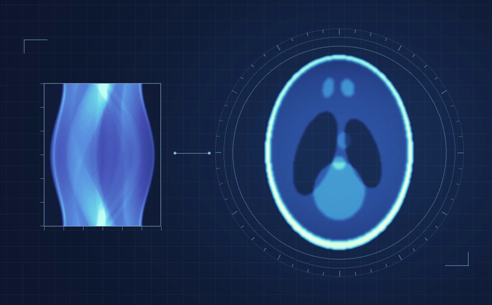

Whole-body 18F-FDG PET reveals glycemic state-dependent reorganization of directed inter-organ metabolic networks
European Journal of Nuclear Medicine and Molecular Imaging · 53(13), 7992–8004
Computational imaging
Shenzhen Institutes of Advanced Technology
Chinese Academy of Sciences
I develop image reconstruction methods that combine imaging physics with learned priors. My work spans low-dose PET, accelerated MRI and compressive hyperspectral imaging.

PhD, Sun Yat-sen University · 2024
Recovering activity distributions from low-count measurements using acquisition models and learned priors.
Reconstructing images from undersampled MRI and sparse-view CT measurements with data consistency.
Recovering spectral image cubes from coded snapshots using low-rank structure and deep unfolding.
European Journal of Nuclear Medicine and Molecular Imaging · 53(13), 7992–8004
The Innovation Informatics · 2(3), 100052
Medical Image Analysis · 109, 103944
Information Fusion · 124, 103366
Physics in Medicine & Biology · 70(17), 175008
Optics & Laser Technology · 171, 110424
Computers and Electrical Engineering · 115, 109133
IEEE Sensors Journal · 24(4), 5097–5106
Optics and Lasers in Engineering · 162, 107413
A deep unrolling network with cross-stage memory and spatial and frequency learning, evaluated on low-dose PET, undersampled MRI and sparse-view CT.
Repository · GitHubA self-supervised unfolding method for dual-camera compressive imaging that uses a panchromatic measurement to guide hyperspectral reconstruction.
Repository · GitHubA model-based unfolding method that combines low-rank tensor structure and spatial–spectral priors for snapshot hyperspectral reconstruction.
Repository · GitHub